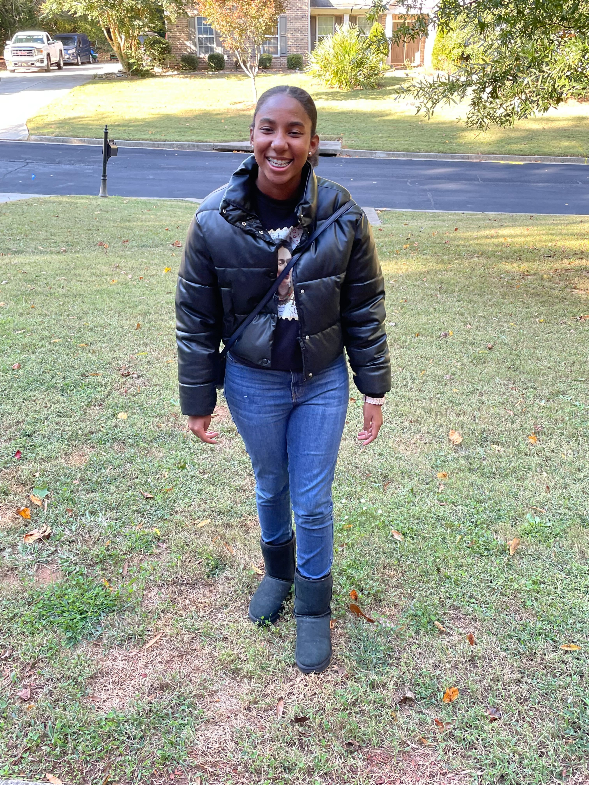

David: I am David Houston and I'm in the 11th grade. I am 17 years old. I attend Westlake High School in South Fulton. My career goals is to be a cyber security engineer. My hobbies are playing basketball and editing videos. A challenge I had in YGT was learning variation code. What I enjoyed the most in YGT was learning how to use bootstrap.

Journey: I am Journey Sims and I'm in 8th grade. I am 15 years old. I attend Flatrock Middle School. My career goal is to make alot of money. My hobbies are collecting sneakers, playing video games, and playing my instrument. A challenge I had in YGT was learning and remembering the vocabulary. What I enjoyed the most in YGT was the uniqueness of the people I worked with.
Kaden: I am Kaden Jobarteh and I'm in 10th grade. I am 15 years old. I go to Creekside High School My career goals is to be a cyber security data analyst. My hobbies are playing video games and configuring technology settings. Challenges I had in YGT was learning style.css and learning the terminology of functions, variables, and operators. What I enjoyed the most in YGT was making webpages.